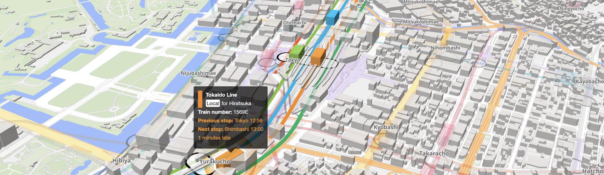

Mini Tokyo 3D
A real-time 3D digital map of Tokyo's public transport system
All in Real-Time
Trains and airplanes operate according to actual timetables and real-time delay information
Easy-To-Read Railroad Map
Using the same line colors used in official route maps with appropriate offsets according to the zoom level
Operability and Performance
Over 2,200 trains run at the same time with a very smooth animation even on smartphones
Support for 4 Languages
In addition to Japanese, Mini Tokyo 3D supports English, Chinese (Simplified and Traditional) and Korean
Over & Under Ground Views
Ease of viewing by switching between the overground and underground railway networks
Real-time Route Search
Displays multiple candidate travel routes based on train delays on an easy-to-understand 3D map